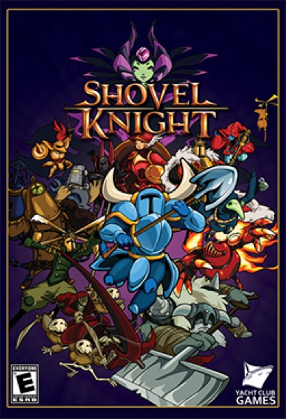

Platformer · 2014
Shovel Knight
Retro homage with modern generosity; proof nostalgia can be craft.

Cover: Wikipedia: Shovel Knight
Facts
- Released
- 2014-06-26
- Genre
- Platformer
- Category
- Platformer
- Platforms
- Mobile, Nintendo, PC, PlayStation, Xbox
- Developers
- Yacht Club Games
- Publishers
- Yacht Club Games